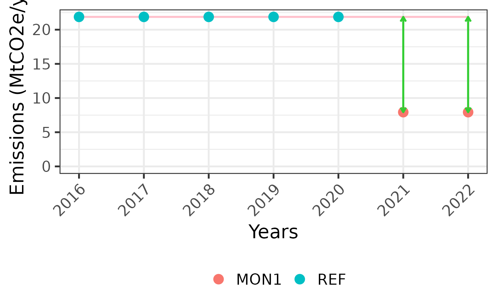

Calculate emissions based on arithmetic means
Source:R/fct_arithmetic_mean.R
fct_arithmetic_mean.RdTBD
Arguments
- .checked_data
The list returned by
fct_checkinput(). Itstemplate_versionelement drives version-specific behaviour and itsdataelement supplies thesetup,time,areaandcarbontables.
Value
A data frame with arithmetic mean of CO2 emissions for each land use transition, REDD+ activity or emission reductions level.
Examples
library(mocaredd)
#> Error in library(mocaredd): there is no package called ‘mocaredd’
path <- system.file("extdata/mocaredd-templatev2-simple.xlsx", package = "mocaredd.dev2")
checked <- fct_checkinput(.path = path)
#> Loading data... - progress: 0%.
#> ✓ Tables loaded successfully from template v2
#> Checking column names... - progress: 14%.
#> ✓ Column names: all required columns present
#> Checking table dimensions... - progress: 29%.
#> ✓ Table sizes: all tables have sufficient rows
#> Checking column data types... - progress: 43%.
#> ✓ Data types: all columns have correct data types
#> Checking category values... - progress: 57%.
#> ✓ Category values: all categories are valid
#> Checking unique IDs... - progress: 71%.
#> ✓ Unique IDs: no duplicates or missing IDs found
#> Checking cross-table and intra_table consistency... - progress: 86%.
#> ✓ Cross-table consistency: all references match
#> -- All checks passed.
res <- fct_arithmetic_mean(.checked_data = checked)
res$gg_emissions
